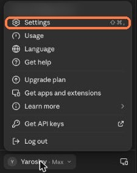
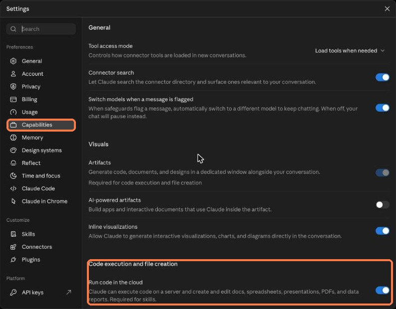
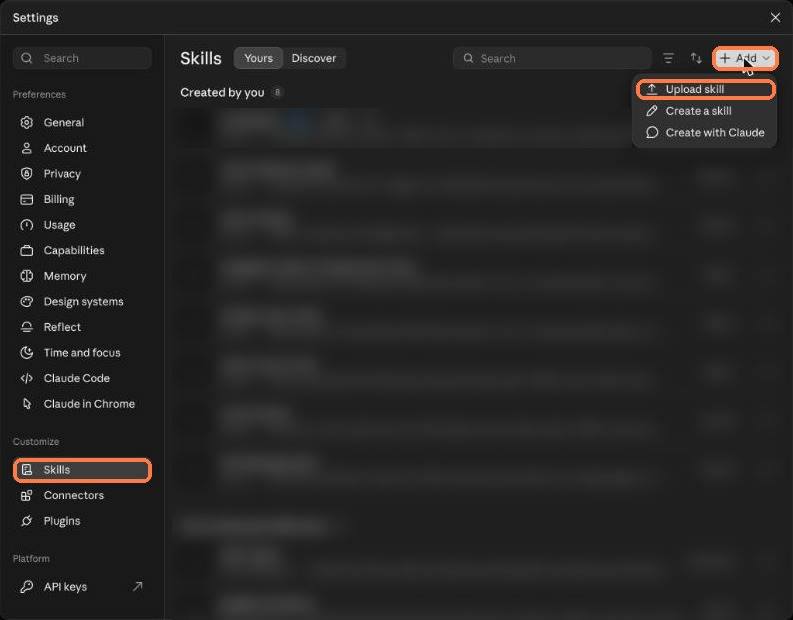
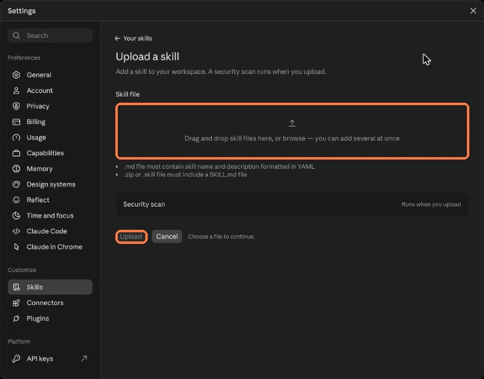
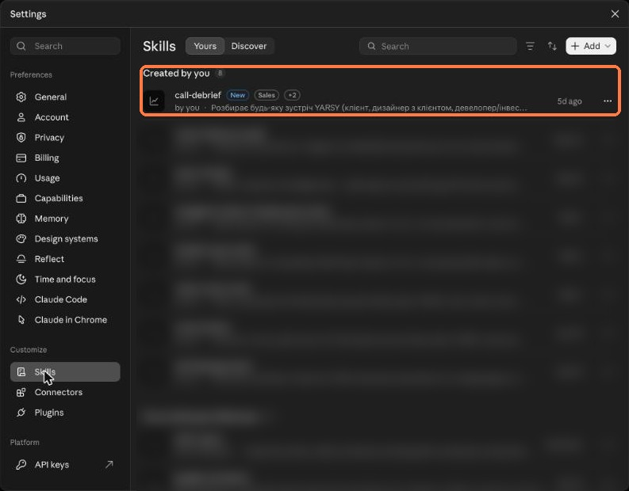

Скіл merch-design для Claude
Скіл знає наш стандарт по мерчу: розміщення лого, розміри й відступи, флети, кадри на людях і збірку презентації. А ще вміє оцінити готову роботу.
Zip не розпаковуйте – Claude приймає його як є. Працює однаково в claude.ai і в застосунку Claude Desktop.
Крок 1
Відкрийте налаштування
- Натисніть на своє ім'я внизу ліворуч.
- Виберіть Settings (або ⇧⌘,).

Крок 2
Увімкніть запуск коду
- Ліворуч виберіть Capabilities.
- У блоці Code execution and file creation увімкніть Run code in the cloud – без цього скіли не працюють.

Крок 3
Додайте скіл
- У розділі Customize виберіть Skills.
- Вгорі праворуч натисніть + Add → Upload skill.

Крок 4
Завантажте zip
- Перетягніть merch-design-team-lite.zip у поле або натисніть browse.
- Натисніть Upload і зачекайте перевірку (Security scan).

Крок 5
Перевірте і почніть
- Скіл merch-design з'явиться у списку Created by you.
- Новий чат: «Зроби мерч для <бренд>» + лого (SVG), брендбук і фото-мокапи.
- Оцінка готової роботи: «Оціни мерч» + мокапи або PDF.

Матеріали містять бренд клієнта – тільки для внутрішньої роботи. Якщо zip не завантажується – напишіть Ярославу.